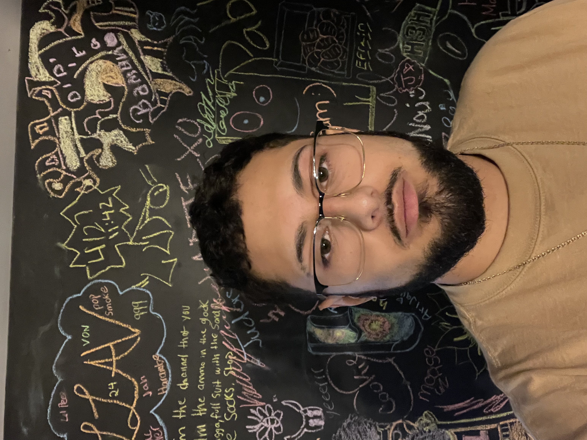

Hello my name is Pablo Enriquez
My Lewis email is: pablorenriquez@lewisu.edu
My discord username is Pablo_ #4287

Introduction
Hi, my major is computer science because I was always fascinated
with technology and I want to be able to continue to progress with technology as it advances.
I have a love/hate relationship with coding as I do find it very challenging but figruing out code works
is satisfying because it isnt easy to just look at code and know what its doing all the time. I often hear
computer people saying that they think they know everything about computers but they really dont know anything
about computers.
What I Hope to Learn In The Course
I hope to get more knowledge that I can use in my career in the future. I thought I wanted to do software
engineering but now I find myself uncertain so I would like to find out what I am truly passionate about.
My Favorite Hobbies
I really enjoy doing all types of things whether it be inside or outside. When it comes to being outdoors
I like to play sports like soccer or volleyball or even enjoy hikes or going out to bars or sports events.
When it comes to being indoors I like to play video games, draw, and do puzzles. I would honestly say that my
favorite past time is hanging out with my girlfriend as it feels peaceful and lets me slip away from reality
for a while.
Fun Fact
A fun fact about me is that I like to volunteer for my family organization called Friends After High School
which aims to have different events for people with special needs. Not to long ago we had a Hawaiian themed
party and we had our greatest turnout. We have worked hard to get different sponsors that enjoy helping out with
their services however they can. For example we have a sponsor that allows us to use their hall for the event, a
family friend who is a dj who plays the music for the event and we even got a hotdog place to provide us with some
food.
Top 3 Greatest Innovations(in my opinion)
My List: